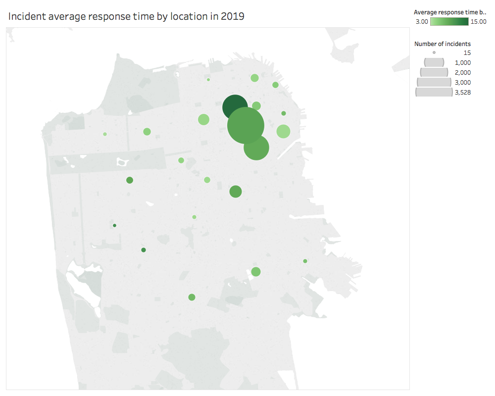

SF Fire Call Logistics by Boom-Graph R&D: Average Response Time by Location
Samuel Escapa & Sameer Isaq
Prototype 1

Visualization 1
Filter by year
2000
2005
2010
2015
2018
Clear
0 - 2 miles
2 miles - 4 miles
4+ miles
Filter by distance from downtown
Tenderloin
Mission
USF
Treasure Island
Specific locations
​
Interpretation
This visualization represents the average incident response time by zipcode, each of which the distance from downtown is calculated. The more red lines are closer to the center of San Francisco (the Financial District), while greener ones are further away. The stroke width is correlated with the number of incidents. You may select to view a particular year using the buttons above the graph, and display zipcodes that are closer, or further, from downtown using the buttons under the graph. It is encouraged to use these as trends from each year vary and the location of the incident demonstrates the increasing number of incidents in the city.
The average response time is calculated by calculating the difference between the call time and on scene time. Any case that no emergency unit is sent, the incident is ignored.
Discussion
With this visualization, we can see that year after year, downtown San Francisco has many more incidents than any other region in the city. This makes sense as the dangerous regions such as the Tenderloin are close to the city center. Further, we can see that even those have a very low response time, but the response time has been faster than average as the years go by. When filtering medium to large distance from downtown, we can see the response times vary a lot, regardless of the number of incidents. There is a particular region, Treasure Island, that suffers most from this. Clicking on this link will demonstrate this single region that despite having a low incident rate and being just 2 miles away from downtown, having a very high average response time. Lastly, scrolling through the years, you can see the increasing number of incidents in the city.
Sameer Isaq
I am a third-year Computer Science student from the Bay Area.
I primarily have experience with backend work, but photography is a large hobby of mine and I am trying to transfer
some of the artistic skills gained through photography to the world of frontend development.
Hope you enjoy!
Github
•
LinkedIn
Samuel Escapa
Passionate learner and coder, explorer of the world! USF Class of 2020, Computer science.
Github
•
LinkedIn